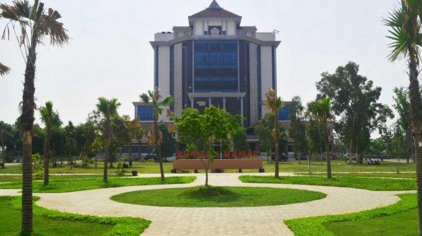

Pengalaman Kuliah
Masuk ke Universitas Trunojoyo Madura adalah pengalaman yang sangat berkesan. Saya merasa senang bisa bertemu dengan teman-teman baru dan dosen yang inspiratif. Di awal perkuliahan, saya sempat merasa gugup, namun suasana yang ramah membuat saya cepat beradaptasi.
Awal masuk kuliah di Universitas Trunojoyo Madura merupakan pengalaman yang sangat berkesan. Saya masih ingat hari pertama kuliah, rasanya campur aduk antara gugup, antusias, dan penasaran. Lingkungan kampus yang baru dan teman-teman dari berbagai daerah membuat saya merasa semangat untuk beradaptasi dan berkembang.
Salah satu mata kuliah yang paling menarik bagi saya adalah Logika Engineering. Dari mata kuliah ini saya mulai memahami pentingnya logika dalam pemecahan masalah dan juga dalam desain dan perancangan. Saya juga tertarik dengan Pemrograman Web, karena melalui mata kuliah ini saya bisa menciptakan sesuatu yang nyata dan bisa langsung digunakan oleh orang lain.
Namun, perjalanan kuliah tidak selalu mulus. Tantangan terbesar adalah saat harus menghadapi beberapa mata kuliah teknis seperti Basis Data dan Algoritma, yang menuntut logika yang kuat dan latihan yang konsisten. Meski sulit, saya merasa bangga karena berhasil melewati semuanya dengan usaha keras dan kerja sama dengan teman-teman saya.
"Kemampuan tidak selalu tampak di permukaan. Tapi mereka yang percaya, akan menemukan waktunya bersinar."